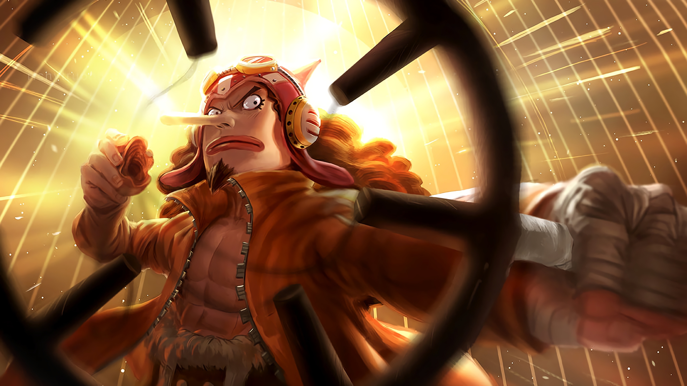
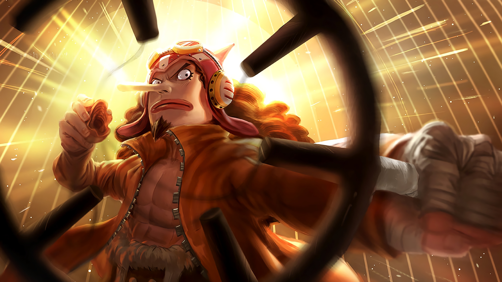

One
Monkey
Roronoa
Vinsmoke
Tony Tony
God
Nico
Piece
D. Luffy
Zoro
Sanji
Nami
Chopper
Usopp
Robin
Franky
Brook
Jinbe
The Adventure Begins.
The king of the pirates!
The Strongest Swordsman!
The Chef!
The Navigator!
The Doctor!
The Snipper!
The Archaeologist!
The Shipwright!
The Musician!
First Son of the Sea!
One Piece (ワンピース) is a Shonen action-adventure manga written and drawn by Eiichiro Oda, serialized in the anthology Weekly Shonen Jump. Set in a fantasy world dominated by pirates, it mainly depicts the adventures of Monkey D. Luffy, a headstrong young captain with the power to stretch like rubber.
Monkey D. Luffy, also known as "Straw Hat Luffy" and commonly as "Straw Hat", is the founder and captain of the increasingly infamous and powerful Straw Hat Pirates, as well as the most powerful of its top fighters.He desires to find the legendary treasure left behind by the late Gol D. Roger and thereby become the Pirate King.
Roronoa Zoro, also known as "Pirate Hunter" Zoro, is a main combatant of the Straw Hat Pirates, one of their two swordsmen, one of the Senior Officers of the Straw Hat Grand Fleet, and is publicly recognized as the right-hand man of his crew's captain Monkey D. Luffy. Formerly a bounty hunter, he is the second member of Luffy's crew and the first to join it.
"Black Leg" Sanji, born as Vinsmoke Sanji, is the cook of the Straw Hat Pirates and one of the Senior Officers of the Straw Hat Grand Fleet. Born as the third son and fourth child of the Vinsmoke Family, he disowned his family twice, once in his youth and again after reuniting with them as an adult. Before meeting Luffy, he was in the care of Zeff as the sous chef of the Baratie
"Cat Burglar" Nami is the navigator of the Straw Hat Pirates and one of the Senior Officers of the Straw Hat Grand Fleet. She is the third member of the crew and the second to join. She is the adoptive sister of Nojiko after the two were orphaned and taken in by Bell-mère.
Tony Tony Chopper, also known as "Cotton Candy Lover" Chopper, is the doctor of the Straw Hat Pirates and one of the Senior Officers of the Straw Hat Grand Fleet. He is the sixth member of the crew and the fifth to join. He was temporarily forced to join the Foxy Pirates during the Long Ring Long Land Arc, but was quickly returned to Luffy's crew.
"God" Usopp is the sniper of the Straw Hat Pirates and one of the Senior Officers of the Straw Hat Grand Fleet. He is the fourth member of the crew and the third to join, doing so at the end of the Syrup Village Arc. Although he left the crew during the Water 7 Arc, he rejoined at the end of the Post-Enies Lobby Arc.
Nico Robin, also known by her epithet "Devil Child" and the "Light of the Revolution", is the archaeologist of the Straw Hat Pirates and one of the Senior Officers of the Straw Hat Grand Fleet. She is the seventh member of the crew and the sixth to join, doing so at the end of the Arabasta Arc. She temporarily left the crew during the Water 7 Arc but rejoined during the Enies Lobby Arc.
"Iron Man" Franky is the shipwright of the Straw Hat Pirates and one of the Senior Officers of the Straw Hat Grand Fleet. He is the crew's eighth member and the seventh to join, doing so at the end of the Post-Enies Lobby Arc. Born "Cutty Flam",[18] he chose to go by his nickname of "Franky" until eventually permanently discarding his true name per the request of Iceburg to hide his identity.
"Soul King" Brook is the musician of the Straw Hat Pirates, one of their two swordsmen, and one of the Senior Officers of the Straw Hat Grand Fleet. He is the ninth member of the crew and the eighth to join, doing so at the end of the Thriller Bark Arc. Brook ate the Yomi Yomi no Mi, which allowed him to return to life after death once.
"Knight of the Sea" Jinbe is the helmsman of the Straw Hat Pirates and one of the Senior Officers of the Straw Hat Grand Fleet. He is the tenth member of the crew and the ninth to join, doing so during the Wano Country Arc. Jinbe is a whale shark fish-man and a powerful master of Fish-Man Karate. His dream is to fulfill his former captain Fisher Tiger's dying wish of coexistence and equality between humans and fish-men.
One Piece is divided into two halves: Sea of Survival: Super Rookies Saga (サバイバルの海 超新星編), and The Final Sea: The New World Saga (最後の海 新世界編).
Born in Foosha Village, Luffy is the son of Monkey D. Dragon, the leader of the Revolutionary Army, and the grandson of the Marine hero Monkey D. Garp, where their family carries the initial of D.
Born in the East Blue, Zoro is the son of Tera and Roronoa Arashi, the grandson of Shimotsuki Furiko and Roronoa Pinzoro, and the grandnephew of Shimotsuki Ushimaru, making him a descendant of both the Shimotsuki Family of Wano Country and the legendary samurai, Shimotsuki Ryuma.
His dream is to find the rumored chef's paradise, All Blue, which is where the East Blue, West Blue, North Blue, and South Blue meet, along with their wildlife. He is one of the top three fighters of the Straw Hats, alongside Luffy and Zoro, who are referred to as the "Monster Trio".
She was formerly a member of the Arlong Pirates and initially joined the Straw Hats so that she could rob them in order to buy back her village from Arlong. However, she legitimately joined the Straw Hats after they rebelled against and defeated Arlong. Her dream is to make a map of the entire world.
Chopper is a reindeer that ate the Hito Hito no Mi, a Devil Fruit that allows its user to transform into a human hybrid at will. He was taught medicine on Drum Island by his two parental figures, Doctors Hiriluk and Kureha. Chopper aims to travel all across the world in the hopes of accomplishing his dream of being able to cure any disease.
Usopp is the son of Yasopp and the late Banchina. He was born and raised in Syrup Village, serving as "captain" of the Usopp Pirates and being Kaya's close friend. After working with the Straw Hats to defeat Kuro and the Black Cat Pirates, he was invited to join the crew. Despite his usual cowardice, Usopp dreams of becoming a brave warrior of the sea.
Born into a family of archaeologists, Robin is the daughter of Nico Olvia. Robin ate the Hana Hana no Mi at a young age, giving her the power to reproduce her body parts on any surface. As the sole survivor of the destroyed West Blue island Ohara, she is currently one of only two people in the world known to have the ability to read and decipher Poneglyphs.
Franky was abandoned by his family as a four-year-old, eventually making his way to Water 7. There, he came to be a member of Tom's Workers, until an incident resulted in his body being heavily damaged and requiring him to augment himself into a cyborg. Upon returning to Water 7, he became the leader of the Franky Family, a group of ship dismantlers and bounty hunters.
Originally a member of the Rumbar Pirates, he died and was resurrected through the power of the Yomi Yomi no Mi. However, due to the amount of time it took for his soul to find his body, it was reduced to a skeleton, keeping only his afro intact. He eventually learned to tap deeper into the powers of his Devil Fruit, giving him significant control over his own soul and the souls of others.
He was a member of the Sun Pirates, eventually becoming its second captain after the death of their original captain, Tiger. He eventually became one of the Seven Warlords of the Sea, though he resigned during the Summit War of Marineford. Vegapunk later cloned Jinbe as one of the Seraphim, S-Shark, to replace the Warlords.